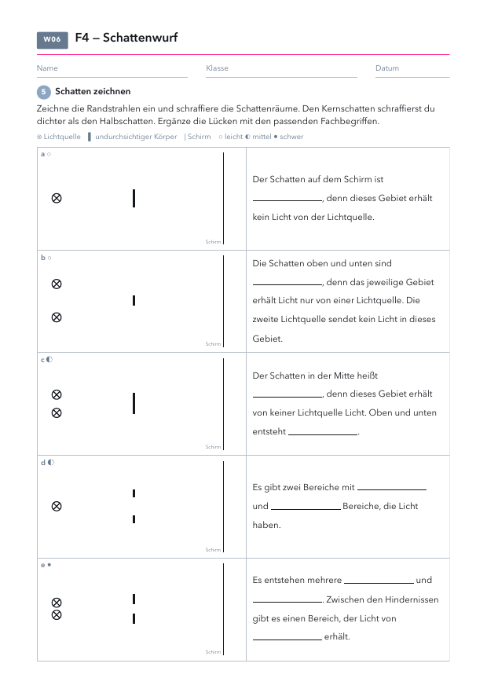
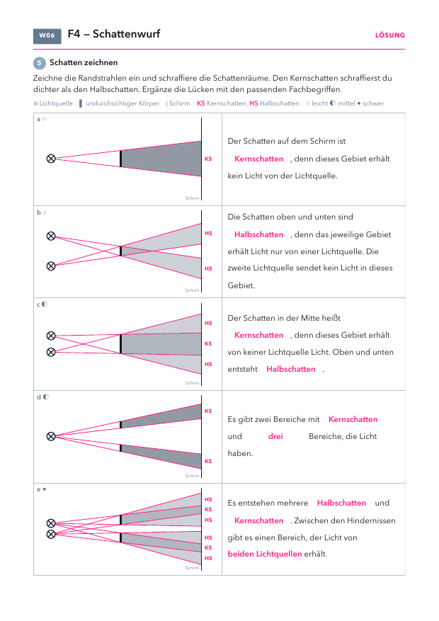

- Nichts drucken: Die Klasse zeichnet mit und schreibt ins Heft.
- Folien und Lösungen: nicht drucken.
Material
Demo (für dich)
| Material | Anzahl | Hinweis |
|---|---|---|
| Tellurium beleuchtet (Phywe) | 1× | Tag und Nacht, Jahreszeiten, Mondphasen und Finsternisse vorne zeigen |
| Film aus der FWU-Mediathek | 1× | Link zum Film; vorher testen, Ton am Apple TV prüfen |
Schülerversuch (pro Gruppe)
| Material | Anzahl | Hinweis |
|---|---|---|
| nicht nötig | ||
Die Stunde
Rückseite des F4-Blatts besprechen: PDF „Schattenwurf W06 Rückseite“ in Notability (Seite 1 Aufgabe, Seite 2 Lösung). Die Lösung ist Folie 1.
Einschub am Tellurium: Tag und Nacht, ein Jahr, geneigte Erdachse. Vermutungen zur Frage.
Vorzeichnen, die Klasse zeichnet mit. Danach die Animation: Erde laufen lassen, Neigung auf 0° und zurück auf 23,5° stellen.
Vorzeichnen, die Klasse zeichnet mit. Antwort ins Heft.
Ab hier Leitfrage 5, so weit es reicht. Vier Wochen Mond, Leitfrage 5, Vermutungen.
Vorne am Tellurium zeigen, wo der Mond steht. Folie dazu.
Film aus der FWU-Mediathek zu Mondphasen und Finsternissen: Film öffnen.
Phasen von der Erde aus, 29,5 Tage: vorzeichnen, die Klasse zeichnet mit. Danach die Animation laufen lassen.
Am Tellurium oder im Mondlabor, dann die Folien zum Mitzeichnen (Sonnenfinsternis, Mondfinsternis).
Alltag mündlich, Antwort ins Heft, Handzeichen.
Labore zur Stunde: 🧪 Mondlabor
Warum gibt es Jahreszeiten?
OptikDie Erde läuft um die Sonne
OptikAnimation: Die Erde läuft um die Sonne
OptikSteile und flache Sonnenstrahlen
Warum gibt es Jahreszeiten?
OptikWas fällt dir an den vier Mondbildern auf?
Warum sieht der Mond nicht immer gleich aus?

Optik; Leitfrage 55.1 Wo steht der Mond?
Mondphasen und Finsternisse
Optik; Leitfrage 55.2 Die Mondphasen
OptikAnimation: Die Mondphasen
Optik; Leitfrage 55.3 Sonnenfinsternis
Optik; Leitfrage 55.4 Mondfinsternis
OptikDen Halbmond sieht man auch am hellen Nachmittag
| im Alltag | was man sieht | warum |
|---|---|---|
| Halbmond am Nachmittag | Mond am hellen Himmel | Die Sonne beleuchtet ihn auch tagsüber. Der zunehmende Halbmond steht nachmittags schon am Himmel. |
| Vollmond am Abend | Er geht auf, wenn die Sonne untergeht | Er steht der Sonne genau gegenüber. |
| Blutmond | Mond bei Mondfinsternis rötlich | Die Lufthülle der Erde lenkt etwas rotes Licht in den Erdschatten. |
| Finsternisbrille | Sonnenfinsternis nur mit Schutz ansehen | Das Sonnenlicht kann die Netzhaut dauerhaft schädigen. |
Antwort: Bei der Mondfinsternis schaut man auf den schwach beleuchteten Mond. Bei der Sonnenfinsternis blickt man in die Sonne, schon ihr schmaler Rand ist so hell, dass er die Netzhaut schädigt.
Warum sieht der Mond nicht immer gleich aus?
Check; OptikLeitfrage 5
1Warum können wir den Mond sehen?
- Er sendet eigenes Licht aus.
- Die Sonne beleuchtet ihn und er wirft das Licht zurück.
- Er glüht von innen.
- Die Erde beleuchtet ihn.
2Bei einer Sonnenfinsternis …
- steht der Mond zwischen Sonne und Erde.
- steht die Erde zwischen Sonne und Mond.
- ist die Sonne für kurze Zeit erloschen.
- steht die Sonne zwischen Erde und Mond.
Lösung; CheckLeitfrage 5
1Warum können wir den Mond sehen?
- Er sendet eigenes Licht aus.
- Die Sonne beleuchtet ihn und er wirft das Licht zurück.
- Er glüht von innen.
- Die Erde beleuchtet ihn.
2Bei einer Sonnenfinsternis …
- steht der Mond zwischen Sonne und Erde.
- steht die Erde zwischen Sonne und Mond.
- ist die Sonne für kurze Zeit erloschen.
- steht die Sonne zwischen Erde und Mond.
So steht es am Ende der Stunde im Heft: Überschriften abschreiben, Zeichnungen abzeichnen, Merksätze abschreiben, die Antwort auf die Leitfrage. Beobachte-, Alltags- und Check-Folien kommen nicht ins Heft. „Fortsetzung“ heißt: im Heft ohne neue Überschrift weiterschreiben.
EinschubWarum gibt es Jahreszeiten?
Die Erde läuft um die Sonne
Steile und flache Sonnenstrahlen
Antwort
Leitfrage 5Warum sieht der Mond nicht immer gleich aus?
5.1 Wo steht der Mond?
5.2 Die Mondphasen
5.3 Sonnenfinsternis
5.4 Mondfinsternis
Antwort auf Leitfrage 5
Rückseite Schattenwurf
- Pro Lichtquelle zwei Randstrahlen über die Kanten des Hindernisses bis zum Schirm. Wo keine Lichtquelle hinkommt: Kernschatten (dicht schraffiert). Wo nur eine hinkommt: Halbschatten.
- Typischer Fehler: Randstrahlen enden am Hindernis oder werden nicht bis zum Schirm verlängert. Bei d (zwei Hindernisse, eine Lampe) gibt es keinen Halbschatten.
- Bei e hilft es, erst alle Strahlen der oberen Lampe zu zeichnen, dann die der unteren, und danach die Gebiete zu zählen.
Jahreszeiten
- Vorlage: dein Foliensatz „Wie entstehen die Jahreszeiten“ (iCloud, Physik Klasse 7, Optik, 3. Mondphasen …). Neu gezeichnet, gleicher Inhalt.
- Erdachse: um 23,5° gegen die Senkrechte auf der Erdbahn geneigt, zeigt immer Richtung Polarstern. Am Tellurium sieht man das gut: Die Achse bleibt beim Umlauf parallel.
- Abstand: Die Bahn ist fast ein Kreis. Anfang Januar ist die Erde der Sonne am nächsten (etwa 147 Mio. km), Anfang Juli am weitesten weg (etwa 152 Mio. km). Bei uns ist im Januar Winter, der Abstand kann also nicht der Grund sein.
- Sonnenhöhe mittags in Schorndorf: im Juni etwa 65°, im Dezember nur etwa 18°.
- Zweiter Grund (wie auf deinem alten Blatt): Im Sommer sind die Tage länger, die Sonne scheint länger.
- Typische Fehlvorstellungen: Im Sommer ist die Erde näher an der Sonne. Die Erdachse kippt im Lauf des Jahres hin und her.
- Versuch zum Zeigen (ohne Bauen): Taschenlampe senkrecht und schräg auf kariertes Papier halten, Kästchen im Lichtfleck zählen.
- Animation (Folie 4): Mit dem Neigungsregler auf 0° sieht man: Ohne geneigte Achse ist keine Halbkugel zur Sonne geneigt, es gäbe keine Jahreszeiten. Die Achse bleibt beim Umlauf parallel.
Wo steht der Mond?
- Der Mond läuft in etwa 27,3 Tagen einmal um die Erde. Von Neumond bis Neumond dauert es 29,5 Tage, weil die Erde in dieser Zeit ein Stück um die Sonne weiterwandert.
- Umlaufsinn: Von Norden aus gesehen läuft der Mond gegen den Uhrzeigersinn. Liegt die Sonne in der Zeichnung links, steht der zunehmende Mond unten, der abnehmende oben.
- Tellurium: Zeigt Mondphasen und beide Finsternisse direkt vorne. Den Raum gut abdunkeln, dann ist die beleuchtete Hälfte klar zu sehen.
- Typische Fehlvorstellungen: Die Phasen entstehen durch den Erdschatten. Der Mond leuchtet selbst. Bei Neumond ist der Mond „weg“.
Mondphasen
- Faustregel für die Nordhalbkugel: rechts hell heißt zunehmend, links hell heißt abnehmend. Auf der Südhalbkugel ist es umgekehrt.
- Der zunehmende Halbmond steht am Nachmittag und Abend am Himmel, der abnehmende am Morgen. Der Vollmond geht beim Sonnenuntergang auf.
Finsternisse
- Die Mondbahn ist um etwa 5° gegen die Erdbahn geneigt. Deshalb gibt es nicht bei jedem Neumond eine Sonnenfinsternis und nicht bei jedem Vollmond eine Mondfinsternis. Im Mondlabor lässt sich der Mond dafür nach oben und unten schieben.
- Der Kernschatten des Mondes ist auf der Erde höchstens rund 270 km breit. Eine totale Sonnenfinsternis sieht man deshalb nur in einem schmalen Streifen, eine Mondfinsternis dagegen überall, wo gerade Nacht ist.
- Blutmond: Die Lufthülle der Erde lenkt etwas Sonnenlicht in den Kernschatten. Dabei bleibt vor allem rotes Licht übrig, wie beim Sonnenuntergang.
- Sicherheit: Sonnenfinsternis nie ohne Finsternisbrille ansehen, auch keine normale Sonnenbrille. Eine Lochkamera ist ein sicherer Weg. Eine Mondfinsternis kann man ohne Schutz ansehen.
Mondlabor
Labor öffnenAlle LaboreMondbahn mit Regler für den Tag seit Neumond und der Ansicht von der Erde, euer Kugelversuch, Sonnenfinsternis mit schiefer Mondbahn, Mondfinsternis mit Blutmond. Auch für zu Hause.
Rückseite Versuchsblatt F4: Schattenwurf
PDF öffnen (Aufgabe und Lösung)Versuchsblatt doppelseitigDie Schüler haben das Blatt schon (Rückseite des Versuchsblatts F4). Schwierigkeit: ○ leicht; ◐ mittel; ● schwer.
Lücken: a ○ Kernschatten; b ○ Halbschatten; c ◐ Kernschatten, Halbschatten; d ◐ Kernschatten, drei; e ● Halbschatten, Kernschatten, beiden Lichtquellen.
Die Kreise stehen ab dem nächsten PDF-Bau auch auf dem Blatt selbst (nach Freigabe).


Mondlabor
Labor öffnenDein H5P „Mondphasen Klasse 7“ liegt unter 04 Ressourcen/Physik/Mondphasen/H5P/ und passt als Wiederholung.